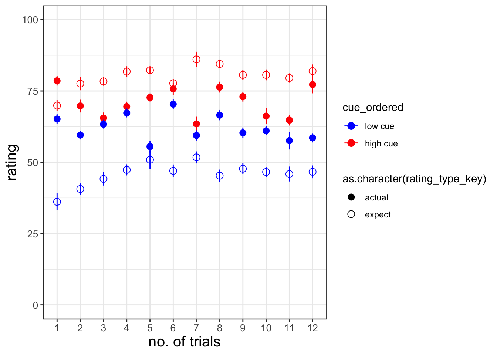
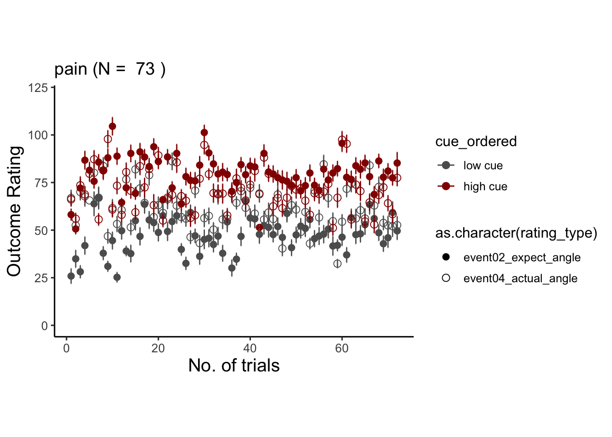
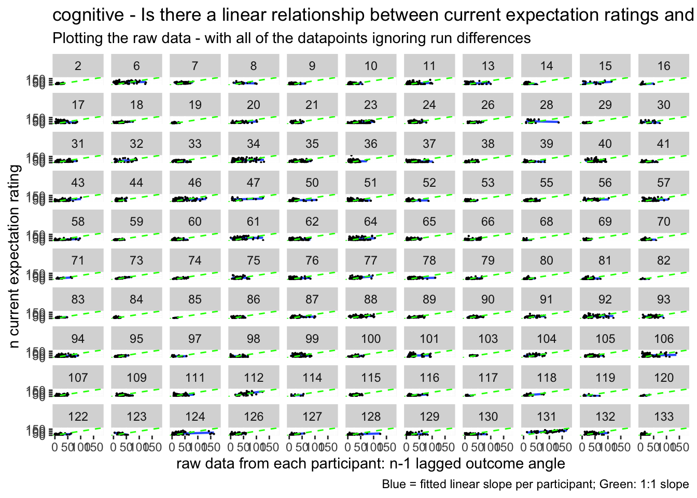
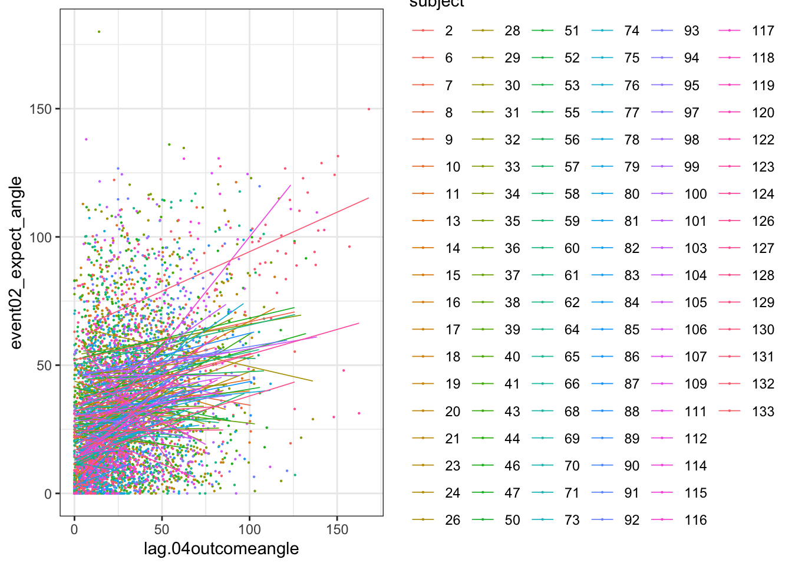

Chapter 7 expect-actual ~ cue * trial
7.1 Overview
The purpose of this markdown is to benchmark the plots from Jepma et al. (2018). Here, we plot the expectancy ratings and the actual ratings, with the high and low cues – in one panel.
Some thoughts, TODOs
- plot 2. some runs were repeated or omitted for the subjects that have more than 72 trials. I need to identify that list and work on the behavioral data.
- I need to check whether the counterbalancing was done correctly.
load data and combine participant data
Code
main_dir = dirname(dirname(getwd()))
datadir = file.path(main_dir, 'data', 'beh', 'beh02_preproc')
# parameters _____________________________________ # nolint
subject_varkey <- "src_subject_id"
iv <- "param_cue_type"
dv <- "event03_RT"
dv_keyword <- "RT"
xlab <- ""
taskname <- "pain"
ylab <- "ratings (degree)"
subject <- "subject"
exclude <- "sub-0001|sub-0003|sub-0004|sub-0005|sub-0025|sub-0999" #/ "sub-0999|sub-0001|sub-0002|sub-0003|sub-0004|sub-0005|sub-0006|sub-0007|sub-0008|sub-0009|sub-0010|sub-0011"
# load data _____________________________________
data <- load_task_social_df(datadir, taskname = taskname, subject_varkey = subject_varkey, iv = iv, exclude = exclude)
data$event03_RT <- data$event03_stimulusC_reseponseonset - data$event03_stimulus_displayonset
# data['event03_RT'], data.event03_RT - pandas
analysis_dir <- file.path(main_dir, "analysis", "mixedeffect", "model06_iv-cue-trial_dv-expect-actual", as.character(Sys.Date()))
dir.create(analysis_dir, showWarnings = FALSE, recursive = TRUE)Code
summary(data)## src_subject_id session_id param_task_name param_run_num
## Min. : 2.00 Min. :1.000 Length:6492 Min. :-2.000
## 1st Qu.: 37.00 1st Qu.:1.000 Class :character 1st Qu.: 2.000
## Median : 73.00 Median :3.000 Mode :character Median : 3.000
## Mean : 69.86 Mean :2.595 Mean : 3.462
## 3rd Qu.:101.00 3rd Qu.:4.000 3rd Qu.: 5.000
## Max. :133.00 Max. :4.000 Max. : 6.000
##
## param_counterbalance_ver param_counterbalance_block_num param_cue_type
## Min. :1.000 Min. :1.000 Length:6492
## 1st Qu.:2.000 1st Qu.:1.000 Class :character
## Median :3.000 Median :2.000 Mode :character
## Mean :3.157 Mean :1.503
## 3rd Qu.:4.000 3rd Qu.:2.000
## Max. :5.000 Max. :2.000
##
## param_stimulus_type param_cond_type param_trigger_onset param_start_biopac
## Length:6492 Min. :1.0 Min. :1.615e+09 Min. :1.615e+09
## Class :character 1st Qu.:2.0 1st Qu.:1.627e+09 1st Qu.:1.627e+09
## Mode :character Median :3.5 Median :1.632e+09 Median :1.632e+09
## Mean :3.5 Mean :1.634e+09 Mean :1.634e+09
## 3rd Qu.:5.0 3rd Qu.:1.644e+09 3rd Qu.:1.644e+09
## Max. :6.0 Max. :1.657e+09 Max. :1.657e+09
##
## ITI_onset ITI_biopac ITI_duration event01_cue_onset
## Min. :1.615e+09 Min. :1.615e+09 Min. : 0.00281 Min. :1.615e+09
## 1st Qu.:1.627e+09 1st Qu.:1.627e+09 1st Qu.: 1.56340 1st Qu.:1.627e+09
## Median :1.632e+09 Median :1.632e+09 Median : 3.26975 Median :1.632e+09
## Mean :1.634e+09 Mean :1.634e+09 Mean : 4.44243 Mean :1.634e+09
## 3rd Qu.:1.644e+09 3rd Qu.:1.644e+09 3rd Qu.: 6.65337 3rd Qu.:1.644e+09
## Max. :1.657e+09 Max. :1.657e+09 Max. :17.07488 Max. :1.657e+09
##
## event01_cue_biopac event01_cue_type event01_cue_filename
## Min. :1.615e+09 Length:6492 Length:6492
## 1st Qu.:1.627e+09 Class :character Class :character
## Median :1.632e+09 Mode :character Mode :character
## Mean :1.634e+09
## 3rd Qu.:1.644e+09
## Max. :1.657e+09
##
## ISI01_onset ISI01_biopac ISI01_duration
## Min. :1.615e+09 Min. :1.615e+09 Min. :0.00396
## 1st Qu.:1.627e+09 1st Qu.:1.627e+09 1st Qu.:0.99133
## Median :1.632e+09 Median :1.632e+09 Median :1.39215
## Mean :1.634e+09 Mean :1.634e+09 Mean :1.47844
## 3rd Qu.:1.644e+09 3rd Qu.:1.644e+09 3rd Qu.:1.98314
## Max. :1.657e+09 Max. :1.657e+09 Max. :2.89685
##
## event02_expect_displayonset event02_expect_biopac event02_expect_responseonset
## Min. :1.615e+09 Min. :1.615e+09 Min. :1.615e+09
## 1st Qu.:1.627e+09 1st Qu.:1.627e+09 1st Qu.:1.627e+09
## Median :1.632e+09 Median :1.632e+09 Median :1.632e+09
## Mean :1.634e+09 Mean :1.634e+09 Mean :1.634e+09
## 3rd Qu.:1.644e+09 3rd Qu.:1.644e+09 3rd Qu.:1.643e+09
## Max. :1.657e+09 Max. :1.657e+09 Max. :1.657e+09
## NA's :661
## event02_expect_RT event02_expect_angle event02_expect_angle_label
## Min. :0.6504 Min. : 0.00 Length:6492
## 1st Qu.:1.6341 1st Qu.: 30.18 Class :character
## Median :2.0517 Median : 58.56 Mode :character
## Mean :2.1397 Mean : 62.94
## 3rd Qu.:2.5678 3rd Qu.: 90.00
## Max. :3.9912 Max. :180.00
## NA's :661 NA's :661
## ISI02_onset ISI02_biopac ISI02_duration
## Min. :1.615e+09 Min. :1.615e+09 Min. : 0.1422
## 1st Qu.:1.627e+09 1st Qu.:1.627e+09 1st Qu.: 1.8599
## Median :1.632e+09 Median :1.632e+09 Median : 4.3664
## Mean :1.634e+09 Mean :1.634e+09 Mean : 4.4542
## 3rd Qu.:1.644e+09 3rd Qu.:1.644e+09 3rd Qu.: 6.2697
## Max. :1.657e+09 Max. :1.657e+09 Max. :20.0723
##
## event03_stimulus_type event03_stimulus_displayonset event03_stimulus_biopac
## Length:6492 Min. :1.615e+09 Min. :1.615e+09
## Class :character 1st Qu.:1.627e+09 1st Qu.:1.627e+09
## Mode :character Median :1.632e+09 Median :1.632e+09
## Mean :1.634e+09 Mean :1.634e+09
## 3rd Qu.:1.644e+09 3rd Qu.:1.644e+09
## Max. :1.657e+09 Max. :1.657e+09
##
## event03_stimulus_C_stim_match event03_stimulusC_response
## Mode:logical Min. :0
## NA's:6492 1st Qu.:0
## Median :0
## Mean :0
## 3rd Qu.:0
## Max. :0
##
## event03_stimulusC_responsekeyname event03_stimulusC_reseponseonset
## Mode:logical Min. :0
## NA's:6492 1st Qu.:0
## Median :0
## Mean :0
## 3rd Qu.:0
## Max. :0
##
## event03_stimulusC_RT ISI03_onset ISI03_biopac ISI03_duration
## Min. :0 Min. :1.615e+09 Min. :1.615e+09 Min. : 0.4788
## 1st Qu.:0 1st Qu.:1.627e+09 1st Qu.:1.627e+09 1st Qu.: 2.3846
## Median :0 Median :1.632e+09 Median :1.632e+09 Median : 4.0370
## Mean :0 Mean :1.634e+09 Mean :1.634e+09 Mean : 4.4870
## 3rd Qu.:0 3rd Qu.:1.644e+09 3rd Qu.:1.644e+09 3rd Qu.: 5.8864
## Max. :0 Max. :1.657e+09 Max. :1.657e+09 Max. :17.6951
##
## event04_actual_displayonset event04_actual_biopac event04_actual_responseonset
## Min. :1.615e+09 Min. :1.615e+09 Min. :1.615e+09
## 1st Qu.:1.627e+09 1st Qu.:1.627e+09 1st Qu.:1.627e+09
## Median :1.632e+09 Median :1.632e+09 Median :1.631e+09
## Mean :1.634e+09 Mean :1.634e+09 Mean :1.634e+09
## 3rd Qu.:1.644e+09 3rd Qu.:1.644e+09 3rd Qu.:1.643e+09
## Max. :1.657e+09 Max. :1.657e+09 Max. :1.657e+09
## NA's :638
## event04_actual_RT event04_actual_angle event04_actual_angle_label
## Min. :0.0168 Min. : 0.00 Length:6492
## 1st Qu.:1.9197 1st Qu.: 38.80 Class :character
## Median :2.3510 Median : 60.77 Mode :character
## Mean :2.4005 Mean : 66.33
## 3rd Qu.:2.8512 3rd Qu.: 88.38
## Max. :3.9930 Max. :180.00
## NA's :638 NA's :641
## param_end_instruct_onset param_end_biopac param_experiment_duration
## Min. :1.615e+09 Min. :1.615e+09 Min. :398.1
## 1st Qu.:1.627e+09 1st Qu.:1.627e+09 1st Qu.:398.6
## Median :1.632e+09 Median :1.632e+09 Median :398.8
## Mean :1.634e+09 Mean :1.634e+09 Mean :398.8
## 3rd Qu.:1.644e+09 3rd Qu.:1.644e+09 3rd Qu.:399.0
## Max. :1.657e+09 Max. :1.657e+09 Max. :399.5
##
## event03_stimulus_P_trigger event03_stimulus_P_delay_between_medoc
## Length:6492 Min. :0
## Class :character 1st Qu.:0
## Mode :character Median :0
## Mean :0
## 3rd Qu.:0
## Max. :0
##
## event03_stimulus_V_patientid event03_stimulus_V_filename
## Mode:logical Mode:logical
## NA's:6492 NA's:6492
##
##
##
##
##
## event03_stimulus_C_stim_num event03_stimulus_C_stim_filename
## Min. :0 Mode:logical
## 1st Qu.:0 NA's:6492
## Median :0
## Mean :0
## 3rd Qu.:0
## Max. :0
##
## delay_between_medoc subject event03_RT
## Min. :0.01409 98 : 96 Min. :-1.657e+09
## 1st Qu.:0.03728 6 : 72 1st Qu.:-1.644e+09
## Median :0.04537 9 : 72 Median :-1.632e+09
## Mean :0.04818 10 : 72 Mean :-1.634e+09
## 3rd Qu.:0.05712 18 : 72 3rd Qu.:-1.627e+09
## Max. :2.03502 29 : 72 Max. :-1.615e+09
## (Other):6036Code
# data(data, package = 'visibly')
myvars <- names(data) %in%
c( "event02_expect_angle", "event02_expect_RT", "event04_actual_angle", "event04_actual_RT", "event01_cue_onset")
newdata <- data[myvars]
# numdata <- unlist(lapply(data, is.numeric), use.names = FALSE)
data_naomit <- na.omit(newdata)
cor_matrix = cor(data_naomit)
corr_heat(cor_matrix)## No FA options specified, using psych package defaults.## Warning in fac(r = r, nfactors = nfactors, n.obs = n.obs, rotate = rotate, : I
## am sorry, to do these rotations requires the GPArotation package to be
## installedCode
ISIvars <- names(data) %in%
c( "ISI01_duration", "ISI02_duration", "ISI03_duration")
ISIdata <- data[ISIvars]
# numdata <- unlist(lapply(data, is.numeric), use.names = FALSE)
ISIdata_naomit <- na.omit(ISIdata)
ISIcor_matrix = cor(ISIdata_naomit)
corr_heat(ISIcor_matrix)## No FA options specified, using psych package defaults.Code
car::vif(lm(event04_actual_angle ~ event02_expect_angle + event02_expect_RT + event04_actual_RT, dat = data_naomit))## event02_expect_angle event02_expect_RT event04_actual_RT
## 1.019462 1.084419 1.0994227.2 plot 1 - one run, average across participants
Code
# subject # run # param_cue # param_stim # rating_type # rating_value
data_trial= data %>%
arrange(src_subject_id, session_id, param_run_num) %>%
group_by(src_subject_id) %>%
mutate(trial_index = rep_len(1:12, length.out = n()))Code
data_long = data_trial %>%
pivot_longer(cols = c('event02_expect_angle', 'event04_actual_angle'),
names_to = "rating_type",
values_to = "rating_value")Code
# # PLOT
data_long$cue_name[data_long$param_cue_type == "high_cue"] <- "high cue"## Warning: Unknown or uninitialised column: `cue_name`.Code
data_long$cue_name[data_long$param_cue_type == "low_cue"] <- "low cue"
data_long$stim_name[data_long$param_stimulus_type == "high_stim"] <- "high"## Warning: Unknown or uninitialised column: `stim_name`.Code
data_long$stim_name[data_long$param_stimulus_type == "med_stim"] <- "med"
data_long$stim_name[data_long$param_stimulus_type == "low_stim"] <- "low"
data_long$stim_ordered <- factor(
data_long$stim_name,
levels = c("low", "med", "high")
)
data_long$cue_ordered <- factor(
data_long$cue_name,
levels = c("low cue", "high cue")
)
subject <- "src_subject_id"
model_iv1 <- "stim_ordered"
model_iv2 <- "cue_ordered"
rating <- "rating_type"
dv <- "rating_value"
trialorder_subjectwise <- meanSummary(
data_long,
c(subject, model_iv2, rating, "trial_index"), dv
)
subjectwise_naomit <- na.omit(trialorder_subjectwise)
trialorder_groupwise <- summarySEwithin(
data = subjectwise_naomit,
measurevar = "mean_per_sub",
withinvars = c("cue_ordered", "rating_type", "trial_index"), idvar = subject
)##
## Attaching package: 'raincloudplots'## The following object is masked _by_ '.GlobalEnv':
##
## GeomFlatViolin## Automatically converting the following non-factors to factors: rating_type, trial_indexCode
trialorder_subjectwise$rating_type_key <- mapvalues(trialorder_subjectwise$rating_type,
from = c("event02_expect_angle", "event04_actual_angle"),
to = c("expect", "actual"))
trialorder_groupwise$rating_type_key <- mapvalues(trialorder_groupwise$rating_type,
from = c("event02_expect_angle", "event04_actual_angle"),
to = c("expect", "actual"))
actual_trialorder_groupwise <- trialorder_groupwise[which(trialorder_groupwise$rating_type_key == "actual"),]
expect_trialorder_groupwise <-trialorder_groupwise[which(trialorder_groupwise$rating_type_key == "expect"),]
actual_trialorder_subjectwise <- trialorder_subjectwise[which(trialorder_subjectwise$rating_type_key == "actual"),]
expect_trialorder_subjectwise <-trialorder_subjectwise[which(trialorder_subjectwise$rating_type_key == "expect"),]ggplot
Code
# * dataset: trialorder_groupwise
# * x-axis: trial_index (sorted)
# * y-axis: rating
# * group: cue_ordered, rating_type
# * DV: mean_per_sub_norm_mean
# * error bar: se
iv1 = "trial_index"
iv2 = "cue_ordered"
data =
g <- ggplot(
data = trialorder_groupwise,
aes(x = trial_index,
y = mean_per_sub_norm_mean,
color = cue_ordered,
group = rating_type_key
)
) +
geom_point(
data = trialorder_groupwise,
aes(
shape = as.character(rating_type_key),
x =trial_index,
y = mean_per_sub_norm_mean,
group = rating_type_key,
#color = cue_ordered
),
#position = position_jitter(width = .05),
size = 3
) +
scale_shape_manual(values=c(16, 21))+
# geom_point(
# data = trialorder_subjectwise,
# aes(
# x = as.numeric(trial_index) - .15,
# y = mean_per_sub,
# color = cue_ordered
# ),
# position = position_jitter(width = .05),
# size = 1, alpha = 0.8, shape = 20
# ) +
geom_errorbar(
data = trialorder_groupwise,
aes(
x = as.numeric(trial_index),
y = mean_per_sub_norm_mean,
group = rating_type_key,
colour = cue_ordered,
ymin = mean_per_sub_norm_mean - se,
ymax = mean_per_sub_norm_mean + se
), width = .01, size = 0.5
) +
scale_color_manual(values = c("high cue" = "red",
"low cue" = "blue")) +
xlab("no. of trials") +
ylab("rating") +
ylim(0,100) +
theme_bw() +
theme( axis.text.x = element_text(size = 10),
axis.text.y = element_text(size = 10),
axis.title.x = element_text(size = 15),
axis.title.y = element_text(size = 15))## Warning: Using `size` aesthetic for lines was deprecated in ggplot2 3.4.0.
## ℹ Please use `linewidth` instead.
## This warning is displayed once every 8 hours.
## Call `lifecycle::last_lifecycle_warnings()` to see where this warning was
## generated.Code
g 
7.3 plot 2 - average across participant, but spread all 6 runs in one x axis
load data and combine participant data
Code
main_dir = dirname(dirname(getwd()))
datadir = file.path(main_dir, 'data', 'beh', 'beh02_preproc')
# parameters _____________________________________ # nolint
subject_varkey <- "src_subject_id"
iv <- "param_cue_type"
dv <- "event03_RT"
dv_keyword <- "RT"
xlab <- ""
taskname <- "pain"
ylab <- "ratings (degree)"
subject <- "subject"
exclude <- "sub-0999|sub-0001|sub-0002|sub-0003|sub-0004|sub-0005|sub-0006|sub-0007|sub-0008|sub-0009|sub-0010|sub-0011"
# load data _____________________________________
data <- load_task_social_df(datadir, taskname = taskname, subject_varkey = subject_varkey, iv = iv, exclude = exclude)p2 :: check number of trials per participant
Code
data_p2= data %>%
arrange(src_subject_id ) %>%
group_by(src_subject_id) %>%
mutate(trial_index = row_number())
# df_clean <- data_p2[complete.cases(data_p2$event02_expect_angle), ]
df_clean <- data_p2[complete.cases(data_p2$event04_actual_angle), ]7.3.0.1 check if every participant has maximum of 72 trials. Anything beyond that is erroneous
Code
# Assuming participant IDs are in a column named "participant_id"
# and row numbers are in a column named "row_number"
# Replace "your_data" with the name of your dataset
# Calculate the maximum row number for each participant
max_rows <- aggregate(trial_index ~ src_subject_id, data_p2, max)
# Check if any participant's maximum row number is not 72
max_rows[max_rows$trial_index > 72,]$src_subject_id## [1] 98p2 :: identify erroneous participant
Code
# participants who have more than 72 trials will be flagged
# excluded for now
# TODO: resolve subject 98
count_trial <- df_clean %>% count("src_subject_id")
count_trial[count_trial$freq > 72,]## [1] src_subject_id freq
## <0 rows> (or 0-length row.names)Code
count_trial[count_trial$freq > 60,]$src_subject_id## [1] 18 29 31 33 34 36 37 38 39 43 44 46 50 51 52 53 55 57 58
## [20] 60 61 62 65 73 74 78 80 86 87 88 90 91 93 94 95 99 100 101
## [39] 105 106 109 111 115 116 122 124 126 127 128 130 132 133p2 :: convert to long form
Code
df_clean <- df_clean[df_clean$src_subject_id != 98, ]
data_p2_long = df_clean %>%
pivot_longer(cols = c('event02_expect_angle', 'event04_actual_angle'),
names_to = "rating_type",
values_to = "rating_value")p2 :: plot data
I’m plotting all of the trials per participant. In this case, there is no trialwise variability, because we’re plotting all 72 trials. Averaging across participants will be the only source of variability, reflected in the error bars
Code
# PLOT
# I'm plotting
data_p2_long$cue_name[data_p2_long$param_cue_type == "high_cue"] <- "high cue"## Warning: Unknown or uninitialised column: `cue_name`.Code
data_p2_long$cue_name[data_p2_long$param_cue_type == "low_cue"] <- "low cue"
data_p2_long$stim_name[data_p2_long$param_stimulus_type == "high_stim"] <- "high"## Warning: Unknown or uninitialised column: `stim_name`.Code
data_p2_long$stim_name[data_p2_long$param_stimulus_type == "med_stim"] <- "med"
data_p2_long$stim_name[data_p2_long$param_stimulus_type == "low_stim"] <- "low"
data_p2_long$stim_ordered <- factor(
data_p2_long$stim_name,
levels = c("low", "med", "high")
)
data_p2_long$cue_ordered <- factor(
data_p2_long$cue_name,
levels = c("low cue", "high cue")
)
model_iv1 <- "stim_ordered"
model_iv2 <- "cue_ordered"
rating <- "rating_type"
dv <- "rating_value"
trialorder_subjectwise_p2 <- meanSummary(
data_p2_long,
c( model_iv2, rating, "trial_index"), dv
)
subjectwise_naomit_p2 <- na.omit(trialorder_subjectwise_p2)
trialorder_groupwise_p2 <- summarySEwithin(
data = subjectwise_naomit_p2,
measurevar = "mean_per_sub",
withinvars = c("cue_ordered", "rating_type", "trial_index"), idvar = subject
)## Automatically converting the following non-factors to factors: rating_type, trial_index## Warning in qt(conf.interval/2 + 0.5, datac$N - 1): NaNs produced## Warning in qt(conf.interval/2 + 0.5, datac$N - 1): NaNs producedCode
trialorder_groupwise_p2$rating_type_key <- mapvalues(trialorder_groupwise_p2$rating_type,
from = c("event02_expect_angle", "event04_actual_angle"),
to = c("expect", "actual"))ggplot
 ## plot data version 2
## plot data version 2
## Warning: Removed 1 rows containing missing values (`geom_point()`). ## subset of participants
## subset of participants
## # A tibble: 5,851 × 60
## # Groups: src_subject_id [110]
## src_subject_id session_id param_task_name param_run_num
## <int> <int> <chr> <int>
## 1 2 1 pain 1
## 2 2 1 pain 1
## 3 2 1 pain 1
## 4 2 1 pain 1
## 5 2 1 pain 1
## 6 2 1 pain 1
## 7 2 1 pain 1
## 8 2 1 pain 1
## 9 2 1 pain 1
## 10 2 1 pain 1
## # ℹ 5,841 more rows
## # ℹ 56 more variables: param_counterbalance_ver <int>,
## # param_counterbalance_block_num <int>, param_cue_type <chr>,
## # param_stimulus_type <chr>, param_cond_type <int>,
## # param_trigger_onset <dbl>, param_start_biopac <dbl>, ITI_onset <dbl>,
## # ITI_biopac <dbl>, ITI_duration <dbl>, event01_cue_onset <dbl>,
## # event01_cue_biopac <dbl>, event01_cue_type <chr>, …## Warning: Unknown or uninitialised column: `cue_name`.## Warning: Unknown or uninitialised column: `stim_name`.## Automatically converting the following non-factors to factors: rating_type, trial_index## Warning in qt(conf.interval/2 + 0.5, datac$N - 1): NaNs produced## Warning in qt(conf.interval/2 + 0.5, datac$N - 1): NaNs produced## Warning: Removed 1 rows containing missing values (`geom_point()`).
7.4 vicarious
## # A tibble: 5,851 × 60
## # Groups: src_subject_id [110]
## src_subject_id session_id param_task_name param_run_num
## <int> <int> <chr> <int>
## 1 2 1 pain 1
## 2 2 1 pain 1
## 3 2 1 pain 1
## 4 2 1 pain 1
## 5 2 1 pain 1
## 6 2 1 pain 1
## 7 2 1 pain 1
## 8 2 1 pain 1
## 9 2 1 pain 1
## 10 2 1 pain 1
## # ℹ 5,841 more rows
## # ℹ 56 more variables: param_counterbalance_ver <int>,
## # param_counterbalance_block_num <int>, param_cue_type <chr>,
## # param_stimulus_type <chr>, param_cond_type <int>,
## # param_trigger_onset <dbl>, param_start_biopac <dbl>, ITI_onset <dbl>,
## # ITI_biopac <dbl>, ITI_duration <dbl>, event01_cue_onset <dbl>,
## # event01_cue_biopac <dbl>, event01_cue_type <chr>, …## Warning: Unknown or uninitialised column: `cue_name`.## Warning: Unknown or uninitialised column: `stim_name`.## Automatically converting the following non-factors to factors: rating_type, trial_index## Warning in qt(conf.interval/2 + 0.5, datac$N - 1): NaNs produced## Warning in qt(conf.interval/2 + 0.5, datac$N - 1): NaNs produced## Warning: Removed 1 rows containing missing values (`geom_point()`).
7.5 cognitive
## # A tibble: 5,851 × 60
## # Groups: src_subject_id [110]
## src_subject_id session_id param_task_name param_run_num
## <int> <int> <chr> <int>
## 1 2 1 pain 1
## 2 2 1 pain 1
## 3 2 1 pain 1
## 4 2 1 pain 1
## 5 2 1 pain 1
## 6 2 1 pain 1
## 7 2 1 pain 1
## 8 2 1 pain 1
## 9 2 1 pain 1
## 10 2 1 pain 1
## # ℹ 5,841 more rows
## # ℹ 56 more variables: param_counterbalance_ver <int>,
## # param_counterbalance_block_num <int>, param_cue_type <chr>,
## # param_stimulus_type <chr>, param_cond_type <int>,
## # param_trigger_onset <dbl>, param_start_biopac <dbl>, ITI_onset <dbl>,
## # ITI_biopac <dbl>, ITI_duration <dbl>, event01_cue_onset <dbl>,
## # event01_cue_biopac <dbl>, event01_cue_type <chr>, …## Warning: Unknown or uninitialised column: `cue_name`.## Warning: Unknown or uninitialised column: `stim_name`.## Automatically converting the following non-factors to factors: rating_type, trial_index## Warning in qt(conf.interval/2 + 0.5, datac$N - 1): NaNs produced## Warning in qt(conf.interval/2 + 0.5, datac$N - 1): NaNs produced## Warning: Removed 1 rows containing missing values (`geom_point()`).
7.6 within subject vicarious
## Warning: Unknown or uninitialised column: `cue_name`.## Warning: Unknown or uninitialised column: `stim_name`.## Automatically converting the following non-factors to factors: trial_index, rating_type## Warning in qt(conf.interval/2 + 0.5, datac$N - 1): NaNs produced## Warning in qt(conf.interval/2 + 0.5, datac$N - 1): NaNs produced## Warning in geom_point(data = trialorder_groupwise_p2, aes(shape =
## as.character(rating_type), : Ignoring unknown aesthetics: linetype## `geom_smooth()` using formula = 'y ~ x'
7.7 Tor request – only outcome ratings. 3 tasks
7.7.1 pain
## Warning: Unknown or uninitialised column: `cue_name`.## Warning: Unknown or uninitialised column: `stim_name`.## Automatically converting the following non-factors to factors: trial_index## Warning in qt(conf.interval/2 + 0.5, datac$N - 1): NaNs produced## Warning in qt(conf.interval/2 + 0.5, datac$N - 1): NaNs produced## `geom_smooth()` using formula = 'y ~ x'
7.7.2 vicarious
## Warning: Unknown or uninitialised column: `cue_name`.## Warning: Unknown or uninitialised column: `stim_name`.## Automatically converting the following non-factors to factors: trial_index## Warning in qt(conf.interval/2 + 0.5, datac$N - 1): NaNs produced## Warning in qt(conf.interval/2 + 0.5, datac$N - 1): NaNs produced## `geom_smooth()` using formula = 'y ~ x'
7.7.3 cognitive
## Warning: Unknown or uninitialised column: `cue_name`.## Warning: Unknown or uninitialised column: `stim_name`.## Automatically converting the following non-factors to factors: trial_index## Warning in qt(conf.interval/2 + 0.5, datac$N - 1): NaNs produced## Warning in qt(conf.interval/2 + 0.5, datac$N - 1): NaNs produced## `geom_smooth()` using formula = 'y ~ x'
7.8 Tor request – only expect ratings. 3 tasks
7.8.1 pain
## Linear mixed model fit by REML. t-tests use Satterthwaite's method [
## lmerModLmerTest]
## Formula:
## event04_actual_angle ~ trial_index * param_cue_type + (param_cue_type |
## src_subject_id)
## Data: df_clean
##
## REML criterion at convergence: 51815.3
##
## Scaled residuals:
## Min 1Q Median 3Q Max
## -4.1391 -0.6157 0.0088 0.6196 4.0913
##
## Random effects:
## Groups Name Variance Std.Dev. Corr
## src_subject_id (Intercept) 860.95 29.342
## param_cue_typelow_cue 41.77 6.463 -0.11
## Residual 582.58 24.137
## Number of obs: 5571, groups: src_subject_id, 110
##
## Fixed effects:
## Estimate Std. Error df t value
## (Intercept) 74.58379 2.94621 125.10816 25.315
## trial_index -0.14818 0.02397 5358.25599 -6.183
## param_cue_typelow_cue -10.07630 1.42124 568.67767 -7.090
## trial_index:param_cue_typelow_cue 0.05386 0.03307 4679.39277 1.629
## Pr(>|t|)
## (Intercept) < 2e-16 ***
## trial_index 6.76e-10 ***
## param_cue_typelow_cue 4.00e-12 ***
## trial_index:param_cue_typelow_cue 0.103
## ---
## Signif. codes: 0 '***' 0.001 '**' 0.01 '*' 0.05 '.' 0.1 ' ' 1
##
## Correlation of Fixed Effects:
## (Intr) trl_nd prm___
## trial_index -0.258
## prm_c_typl_ -0.241 0.524
## trl_ndx:___ 0.184 -0.688 -0.765## Type III Analysis of Variance Table with Satterthwaite's method
## Sum Sq Mean Sq NumDF DenDF F value Pr(>F)
## trial_index 28321.1 28321.1 1 5407.0 48.6134 3.490e-12 ***
## param_cue_type 29283.6 29283.6 1 568.7 50.2655 3.999e-12 ***
## trial_index:param_cue_type 1545.4 1545.4 1 4679.4 2.6527 0.1034
## ---
## Signif. codes: 0 '***' 0.001 '**' 0.01 '*' 0.05 '.' 0.1 ' ' 1## Warning: Unknown or uninitialised column: `cue_name`.## Warning: Unknown or uninitialised column: `stim_name`.## Automatically converting the following non-factors to factors: trial_index## Warning in qt(conf.interval/2 + 0.5, datac$N - 1): NaNs produced## Warning in qt(conf.interval/2 + 0.5, datac$N - 1): NaNs produced## `geom_smooth()` using formula = 'y ~ x'
7.8.2 vicarious
## Linear mixed model fit by REML. t-tests use Satterthwaite's method [
## lmerModLmerTest]
## Formula:
## event04_actual_angle ~ trial_index * param_cue_type + (param_cue_type |
## src_subject_id)
## Data: df_clean
##
## REML criterion at convergence: 54872.6
##
## Scaled residuals:
## Min 1Q Median 3Q Max
## -2.8647 -0.6683 -0.2164 0.4658 5.5008
##
## Random effects:
## Groups Name Variance Std.Dev. Corr
## src_subject_id (Intercept) 132.485 11.510
## param_cue_typelow_cue 4.966 2.229 -0.89
## Residual 578.849 24.059
## Number of obs: 5936, groups: src_subject_id, 110
##
## Fixed effects:
## Estimate Std. Error df t value
## (Intercept) 26.04180 1.42259 222.10012 18.306
## trial_index 0.14033 0.02205 5791.42518 6.363
## param_cue_typelow_cue -10.93655 1.27427 1283.22709 -8.583
## trial_index:param_cue_typelow_cue 0.08509 0.03037 5513.06146 2.802
## Pr(>|t|)
## (Intercept) < 2e-16 ***
## trial_index 2.13e-10 ***
## param_cue_typelow_cue < 2e-16 ***
## trial_index:param_cue_typelow_cue 0.00509 **
## ---
## Signif. codes: 0 '***' 0.001 '**' 0.01 '*' 0.05 '.' 0.1 ' ' 1
##
## Correlation of Fixed Effects:
## (Intr) trl_nd prm___
## trial_index -0.543
## prm_c_typl_ -0.556 0.594
## trl_ndx:___ 0.387 -0.697 -0.854## Type III Analysis of Variance Table with Satterthwaite's method
## Sum Sq Mean Sq NumDF DenDF F value Pr(>F)
## trial_index 77430 77430 1 5869.4 133.7658 < 2.2e-16 ***
## param_cue_type 42638 42638 1 1283.2 73.6606 < 2.2e-16 ***
## trial_index:param_cue_type 4546 4546 1 5513.1 7.8532 0.005091 **
## ---
## Signif. codes: 0 '***' 0.001 '**' 0.01 '*' 0.05 '.' 0.1 ' ' 1## Warning: Unknown or uninitialised column: `cue_name`.## Warning: Unknown or uninitialised column: `stim_name`.## Automatically converting the following non-factors to factors: trial_index## Warning in qt(conf.interval/2 + 0.5, datac$N - 1): NaNs produced## Warning in qt(conf.interval/2 + 0.5, datac$N - 1): NaNs produced## `geom_smooth()` using formula = 'y ~ x'
7.8.3 cognitive
## Linear mixed model fit by REML. t-tests use Satterthwaite's method [
## lmerModLmerTest]
## Formula:
## event04_actual_angle ~ trial_index * param_cue_type + (param_cue_type |
## src_subject_id)
## Data: df_clean
##
## REML criterion at convergence: 52049.3
##
## Scaled residuals:
## Min 1Q Median 3Q Max
## -4.1640 -0.6201 -0.1508 0.4678 6.3870
##
## Random effects:
## Groups Name Variance Std.Dev. Corr
## src_subject_id (Intercept) 197.53 14.054
## param_cue_typelow_cue 26.61 5.158 -0.54
## Residual 369.48 19.222
## Number of obs: 5901, groups: src_subject_id, 110
##
## Fixed effects:
## Estimate Std. Error df t value
## (Intercept) 34.74794 1.52822 156.81597 22.737
## trial_index -0.06251 0.01795 5781.38971 -3.482
## param_cue_typelow_cue -10.41305 1.13179 632.34807 -9.201
## trial_index:param_cue_typelow_cue 0.06544 0.02468 5538.06618 2.651
## Pr(>|t|)
## (Intercept) < 2e-16 ***
## trial_index 0.000502 ***
## param_cue_typelow_cue < 2e-16 ***
## trial_index:param_cue_typelow_cue 0.008037 **
## ---
## Signif. codes: 0 '***' 0.001 '**' 0.01 '*' 0.05 '.' 0.1 ' ' 1
##
## Correlation of Fixed Effects:
## (Intr) trl_nd prm___
## trial_index -0.411
## prm_c_typl_ -0.514 0.547
## trl_ndx:___ 0.296 -0.705 -0.776## Type III Analysis of Variance Table with Satterthwaite's method
## Sum Sq Mean Sq NumDF DenDF F value Pr(>F)
## trial_index 2020.5 2020.5 1 5783.0 5.4686 0.019395 *
## param_cue_type 31276.3 31276.3 1 632.3 84.6500 < 2.2e-16 ***
## trial_index:param_cue_type 2597.6 2597.6 1 5538.1 7.0304 0.008037 **
## ---
## Signif. codes: 0 '***' 0.001 '**' 0.01 '*' 0.05 '.' 0.1 ' ' 1## Warning: Unknown or uninitialised column: `cue_name`.## Warning: Unknown or uninitialised column: `stim_name`.## Automatically converting the following non-factors to factors: trial_index## Warning in qt(conf.interval/2 + 0.5, datac$N - 1): NaNs produced## Warning in qt(conf.interval/2 + 0.5, datac$N - 1): NaNs produced## `geom_smooth()` using formula = 'y ~ x'
7.9 lmer
## Linear mixed model fit by REML. t-tests use Satterthwaite's method [
## lmerModLmerTest]
## Formula:
## event04_actual_angle ~ trial_index * param_cue_type + (param_cue_type |
## src_subject_id)
## Data: df_clean
##
## REML criterion at convergence: 52049.3
##
## Scaled residuals:
## Min 1Q Median 3Q Max
## -4.1640 -0.6201 -0.1508 0.4678 6.3870
##
## Random effects:
## Groups Name Variance Std.Dev. Corr
## src_subject_id (Intercept) 197.53 14.054
## param_cue_typelow_cue 26.61 5.158 -0.54
## Residual 369.48 19.222
## Number of obs: 5901, groups: src_subject_id, 110
##
## Fixed effects:
## Estimate Std. Error df t value
## (Intercept) 34.74794 1.52822 156.81597 22.737
## trial_index -0.06251 0.01795 5781.38971 -3.482
## param_cue_typelow_cue -10.41305 1.13179 632.34807 -9.201
## trial_index:param_cue_typelow_cue 0.06544 0.02468 5538.06618 2.651
## Pr(>|t|)
## (Intercept) < 2e-16 ***
## trial_index 0.000502 ***
## param_cue_typelow_cue < 2e-16 ***
## trial_index:param_cue_typelow_cue 0.008037 **
## ---
## Signif. codes: 0 '***' 0.001 '**' 0.01 '*' 0.05 '.' 0.1 ' ' 1
##
## Correlation of Fixed Effects:
## (Intr) trl_nd prm___
## trial_index -0.411
## prm_c_typl_ -0.514 0.547
## trl_ndx:___ 0.296 -0.705 -0.776## Type III Analysis of Variance Table with Satterthwaite's method
## Sum Sq Mean Sq NumDF DenDF F value Pr(>F)
## trial_index 2020.5 2020.5 1 5783.0 5.4686 0.019395 *
## param_cue_type 31276.3 31276.3 1 632.3 84.6500 < 2.2e-16 ***
## trial_index:param_cue_type 2597.6 2597.6 1 5538.1 7.0304 0.008037 **
## ---
## Signif. codes: 0 '***' 0.001 '**' 0.01 '*' 0.05 '.' 0.1 ' ' 17.9.1 lmer histogram
Code
hist(random_slopes)
Code
df <- data.frame(sub = group_ids, cue_randomslope = random_slopes)
write.csv(df, file.path(main_dir,"data","RL", "cue_trial_ranef_{taskname}.csv"), row.names = FALSE)
# TODO: create a json file that also keeps track of which participants are include hree, using what model
# comment7.10 Do current expectation ratings predict outcome ratings?
Additional analyse 01/18/2023
- see if current expectation ratings predict outcome ratings
- see if prior stimulus experience (N-1) predicts current expectation ratings
- see if current expectation ratings are explained as a function of prior outcome rating and current expectation rating
when loading the dataset, I need to add in trial index per dataframe. Then, for the shift the rating?
Code
data_a3 <- data_p2 %>%
group_by(src_subject_id, session_id, param_run_num) %>%
mutate(trial_index = row_number(param_run_num))
data_a3lag <-
data_a3 %>%
group_by(src_subject_id, session_id, param_run_num) %>%
mutate(lag.04outcomeangle = dplyr::lag(event04_actual_angle, n = 1, default = NA))
data_a3lag_omit <- data_a3lag[complete.cases(data_a3lag$lag.04outcomeangle),]Code
trialorder_subjectwise_lagoutcome <- meanSummary(
data_a3lag_omit,
c("src_subject_id", "session_id", "param_run_num"), "lag.04outcomeangle" )
trialorder_subjectwise_lagoutcome <- meanSummary(
data_a3lag_omit,
c("src_subject_id", "session_id", "param_run_num"), "lag.04outcomeangle" )
# subjectwise_naomit <- na.omit(trialorder_subjectwise)
# trialorder_groupwise <- summarySEwithin(
# data = subjectwise_naomit,
# measurevar = "mean_per_sub",
# withinvars = c("cue_ordered", "rating_type", "trial_index"), idvar = subject
# )Code
model.lagoutcome = lmer(event02_expect_angle ~ lag.04outcomeangle + (1 | src_subject_id) + (1|session_id) , data = data_a3lag_omit)
summary(model.lagoutcome)## Linear mixed model fit by REML. t-tests use Satterthwaite's method [
## lmerModLmerTest]
## Formula: event02_expect_angle ~ lag.04outcomeangle + (1 | src_subject_id) +
## (1 | session_id)
## Data: data_a3lag_omit
##
## REML criterion at convergence: 49728.1
##
## Scaled residuals:
## Min 1Q Median 3Q Max
## -2.8551 -0.7402 -0.1322 0.6351 6.3909
##
## Random effects:
## Groups Name Variance Std.Dev.
## src_subject_id (Intercept) 121.4858 11.0221
## session_id (Intercept) 0.2696 0.5192
## Residual 531.1376 23.0464
## Number of obs: 5427, groups: src_subject_id, 110; session_id, 3
##
## Fixed effects:
## Estimate Std. Error df t value Pr(>|t|)
## (Intercept) 2.873e+01 1.230e+00 6.852e+01 23.36 <2e-16 ***
## lag.04outcomeangle 1.780e-01 1.562e-02 5.374e+03 11.40 <2e-16 ***
## ---
## Signif. codes: 0 '***' 0.001 '**' 0.01 '*' 0.05 '.' 0.1 ' ' 1
##
## Correlation of Fixed Effects:
## (Intr)
## lg.04tcmngl -0.365Code
meanSummary_2dv <- function(DATA, GROUP, DV1, DV2) {
z <- ddply(DATA, GROUP, .fun = function(xx) {
c(
DV1_mean_per_sub = mean(xx[, DV1], na.rm = TRUE),
DV1_sd = sd(xx[, DV1], na.rm = TRUE),
DV2_mean_per_sub = mean(xx[, DV2], na.rm = TRUE),
DV2_sd = sd(xx[, DV1], na.rm = TRUE)
)
})
return(z)
}Code
subjectwise_2dv = meanSummary_2dv(data_a3lag_omit,
c("src_subject_id", "trial_index"),
"lag.04outcomeangle", "event02_expect_angle")Code
subjectwise_naomit_2dv <- na.omit(subjectwise_2dv)Code
sp <- ggplot(data=subjectwise_naomit_2dv,
aes(x=DV1_mean_per_sub, y=DV2_mean_per_sub)) +
geom_point() +
geom_abline(intercept = 0, slope = 1, color="green",
linetype="dashed", size=0.5) +
theme(aspect.ratio=1) +
xlab("n-1 outcome rating") +
ylab("n expectation rating")
sp
Code
# plot(subjectwise_naomit_2dv$DV1_mean_per_sub, subjectwise_naomit_2dv$DV2_mean_per_sub) + lines(x = c(0,200), y = c(0,200))Code
trialorder_groupwise <- summarySEwithin(
data = subjectwise_naomit_2dv,
measurevar = "DV1_mean_per_sub",
# betweenvars = "src_subject_id",
withinvars = factor( "trial_index"),
idvar = "src_subject_id"
)## Automatically converting the following non-factors to factors: src_subject_idCode
trialorder_groupwise <- summarySEwithin(
data = subset(subjectwise_naomit_2dv, select = -c(src_subject_id)),
measurevar = "DV1_mean_per_sub",
# betweenvars = "src_subject_id",
withinvars = as.factor( "trial_index")
#idvar = "trial_index"
)## Automatically converting the following non-factors to factors: trial_indexCode
data_a3lag_omit$src_subject_id <- as.factor(data_a3lag_omit$src_subject_id)
lag.raw <- ggplot(aes(x=lag.04outcomeangle, y=event02_expect_angle), data=data_a3lag_omit) +
geom_smooth(method='lm', se=F, size=0.75) +
geom_point(size=0.1) +
geom_abline(intercept = 0, slope = 1, color="green",
linetype="dashed", size=0.5) +
facet_wrap(~src_subject_id) +
theme(legend.position='none') +
xlim(0,180) + ylim(0,180) +
xlab("raw data from each participant: n-1 lagged outcome angle") +
ylab("n current expectation rating")
lag.raw +
labs(title = paste(taskname, "- Is there a linear relationship between current expectation ratings and the previous outcome ratings?"),
subtitle = "Plotting the raw data - with all of the datapoints ignoring run differences",
caption = "Blue = fitted linear slope per participant; Green: 1:1 slope")## `geom_smooth()` using formula = 'y ~ x'## Warning: Removed 276 rows containing non-finite values (`stat_smooth()`).## Warning: Removed 276 rows containing missing values (`geom_point()`).
Code
subjectwise_naomit_2dv$src_subject_id <- as.factor(subjectwise_naomit_2dv$src_subject_id)
lag.avg <- ggplot(aes(x=DV1_mean_per_sub, y=DV2_mean_per_sub), data=subjectwise_naomit_2dv) +
geom_smooth(method='lm', se=F, size=0.75) +
geom_point(size=0.1) +
geom_abline(intercept = 0, slope = 1, color="green",
linetype="dashed", size=0.5) +
facet_wrap(~src_subject_id) +
theme(legend.position='none') +
xlim(0,180) + ylim(0,180) +
xlab("raw data from each participant: n-1 lagged outcome angle") +
ylab("n current expectation rating")
lag.avg +
labs(title = paste(taskname, "- Is there a linear relationship between current expectation ratings and the previous outcome ratings?"),
subtitle = "Observation notes: 1) The relationship is more of an attenuated one, where the higher outcome ratings lead to a slightly lower expectation rating, and a low outcome leads to a higher expectation rating, when considering a 1:1 relationship. This pattern could be explained by regression to the mean type mechanism, where participants are accounting for the fact that their previous experience was extreme on either ends and that this current trial will be under/over estimated. It probably will make sense to also see the relationship between current expectation ratings influencing current outcome ratings. ",
caption = "Blue = fitted linear slope per participant; Green: 1:1 slope")## `geom_smooth()` using formula = 'y ~ x'
Code
# https://gist.github.com/even4void/5074855Code
ggplot(data_a3lag_omit, aes(y = event02_expect_angle,
x = lag.04outcomeangle,
colour = subject), size = .3, color = 'gray') +
geom_point(size = .1) +
geom_smooth(method = 'lm', formula= y ~ x, se = FALSE, size = .3) +
theme_bw()## Warning: Removed 276 rows containing non-finite values (`stat_smooth()`).## Warning: Removed 276 rows containing missing values (`geom_point()`).
7.11 Additional analysis
01/23/2023
Code
model.lag_cue = lmer(event02_expect_angle ~ lag.04outcomeangle*param_cue_type + (1 | src_subject_id) + (1|session_id) , data = data_a3lag_omit)
summary(model.lag_cue)## Linear mixed model fit by REML. t-tests use Satterthwaite's method [
## lmerModLmerTest]
## Formula: event02_expect_angle ~ lag.04outcomeangle * param_cue_type +
## (1 | src_subject_id) + (1 | session_id)
## Data: data_a3lag_omit
##
## REML criterion at convergence: 46175.7
##
## Scaled residuals:
## Min 1Q Median 3Q Max
## -4.3458 -0.6383 -0.0833 0.5246 9.8300
##
## Random effects:
## Groups Name Variance Std.Dev.
## src_subject_id (Intercept) 128.73691 11.3462
## session_id (Intercept) 0.03408 0.1846
## Residual 272.07427 16.4947
## Number of obs: 5427, groups: src_subject_id, 110; session_id, 3
##
## Fixed effects:
## Estimate Std. Error df
## (Intercept) 42.76857 1.21398 129.42606
## lag.04outcomeangle 0.23730 0.01465 5394.92176
## param_cue_typelow_cue -27.33964 0.71898 5316.67781
## lag.04outcomeangle:param_cue_typelow_cue -0.15072 0.01922 5309.65154
## t value Pr(>|t|)
## (Intercept) 35.230 < 2e-16 ***
## lag.04outcomeangle 16.197 < 2e-16 ***
## param_cue_typelow_cue -38.026 < 2e-16 ***
## lag.04outcomeangle:param_cue_typelow_cue -7.842 5.3e-15 ***
## ---
## Signif. codes: 0 '***' 0.001 '**' 0.01 '*' 0.05 '.' 0.1 ' ' 1
##
## Correlation of Fixed Effects:
## (Intr) lg.04t prm___
## lg.04tcmngl -0.350
## prm_c_typl_ -0.293 0.500
## lg.04tc:___ 0.227 -0.639 -0.781Code
meanSummary_2dv <- function(DATA, GROUP, DV1, DV2) {
z <- ddply(DATA, GROUP, .fun = function(xx) {
c(
DV1_mean_per_sub = mean(xx[, DV1], na.rm = TRUE),
DV1_sd = sd(xx[, DV1], na.rm = TRUE),
DV2_mean_per_sub = mean(xx[, DV2], na.rm = TRUE),
DV2_sd = sd(xx[, DV1], na.rm = TRUE)
)
})
return(z)
}Code
subjectwise_cuetype = meanSummary_2dv(data_a3lag_omit,
c("src_subject_id", "trial_index", "param_cue_type"),
"lag.04outcomeangle", "event02_expect_angle")Code
# subjectwise_cuetype_2dv <- na.omit(subjectwise_cuetype)Code
subjectwise_cuetype$param_cue_type <- as.factor(subjectwise_cuetype$param_cue_type)
sp <- ggplot(data=subjectwise_cuetype,
aes(x=DV1_mean_per_sub, y=DV2_mean_per_sub,
color = param_cue_type)) +
geom_point() +
geom_abline(intercept = 0, slope = 1, color="green",
linetype="dashed", size=0.5) +
geom_smooth(method = 'lm') +
theme(aspect.ratio=1) +
xlab("n-1 outcome rating") +
ylab("n expectation rating")
sp +
labs(title = paste(taskname, "- Does the linear relationship between current expectation ratings and the previous outcome ratings differ as a function of cue?"),
subtitle = "Plotting the raw data - with all of the datapoints averaged across runs per 12 trials",
caption = "high cue vs low cue. The slope is significant, theree is not interaction; Green: 1:1 slope")## `geom_smooth()` using formula = 'y ~ x'## Warning: Removed 49 rows containing non-finite values (`stat_smooth()`).## Warning: Removed 49 rows containing missing values (`geom_point()`).
Code
# plot(subjectwise_naomit_2dv$DV1_mean_per_sub, subjectwise_naomit_2dv$DV2_mean_per_sub) + lines(x = c(0,200), y = c(0,200))